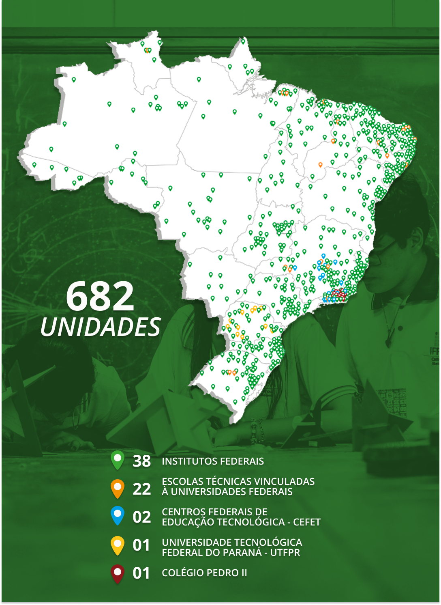

O trabalho e a formação do trabalhador na EPT
A multidão de trabalhadores inseridos de forma precária no mundo do trabalho cada vez mais dinâmico, flexível, técnico-informacional e movido de incertezas busca na formação e na qualificação profissional um caminho viável para sua sobrevivência e dignidade.
A EPT é um espaço privilegiado de formação desses jovens e adultos trabalhadores e trabalhadoras. No Brasil, os dados do Censo Escolar de 2023 mostram que a oferta da EPT no país aumentou 12,1% entre 2022 e 2023. No que diz respeito à dependência administrativa e à localização das instituições que oferecem educação profissional, a maior parte das matrículas ocorre na rede privada (44,4%). As redes estadual e federal vêm a seguir, com 38,2% e 13,7%, respectivamente. Dentre todas as modalidades de ensino, a educação profissional tem o maior número de matrículas na rede federal, totalizando 331.037 em 2023. Esta mesma rede também apresenta o maior número de matrículas em educação profissional técnica (EPT) na zona rural, com 49.467 registros (Brasil, 2024).
No Brasil, a Rede Federal de Educação Profissional, Científica e Tecnológica é composta por 682 unidades atualmente, envolvendo Institutos Federais de Educação, Ciência e Tecnologia e seus campi, Universidade Tecnológica Federal do Paraná, Centros Federais de Educação Tecnológica, Escolas Técnicas Vinculadas e o Colégio Pedro II, abarcando cerca de um milhão de matrículas anuais. Constitui-se na mais importante e fundamental rede pública de formação de trabalhadores do país no âmbito da Educação Profissional e Tecnológica.

Título: Mapa da rede federal de EPT
Fonte: Ministério da Educação (2024a).
Elaboração: Prosa (2024).
Para refletir: a importância e os impactos da rede federal de EPT na sua vida
Você chegou ao segundo momento de reflexão desta unidade. Para ajudá-lo nesse processo, assista ao vídeo abaixo, em que compartilho a importância e os impactos que a rede federal de EPT possui para a formação de trabalhadores em nossas comunidades.
Título: De que maneira a rede federal tem impactado a formação dos trabalhadores?
Fonte: Ministério da Educação (2024a).
Elaboração: Prosa (2024).
Na sequência, responda às seguintes perguntas:
- De que maneira a rede federal de EPT impacta a vida e a formação dos trabalhadores na sua cidade e/ou comunidade?
- Qual a especificidade do trabalho e da formação de trabalhadores na EPT?
Lembre-se de registrar suas reflexões no Memorial ou de seguir as orientações dos seus tutores sobre essa atividade.